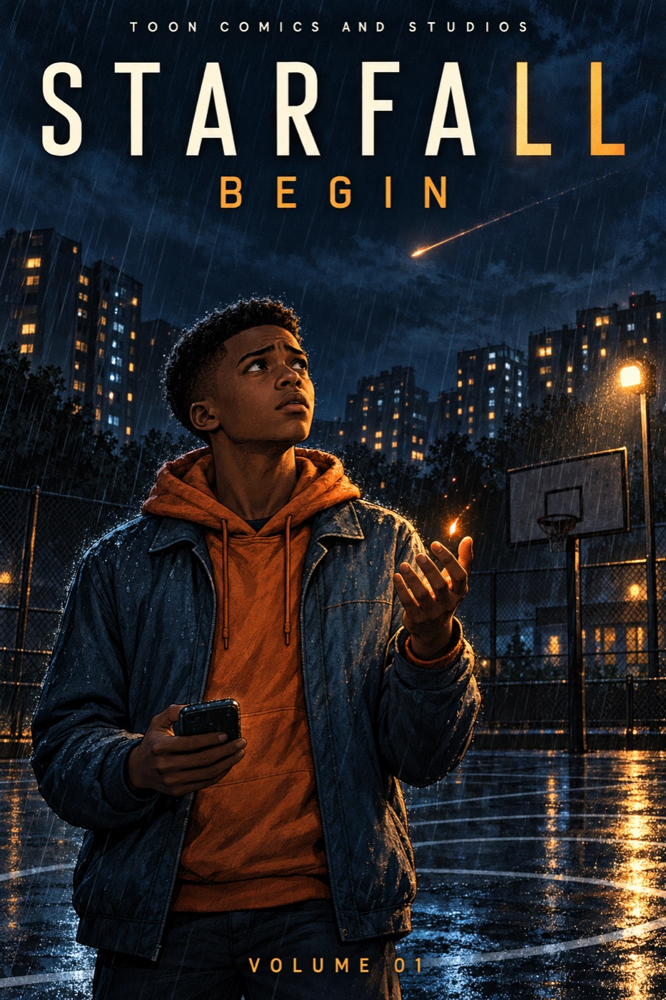

STORIES WITH HEART.WORLDS WITH CONSEQUENCES.CHARACTERS YOU CARRY WITH YOU.
01 / OUR ORIGINAL WORLDS
Two worlds. Entirely their own.
From a race to save an island to eight teenagers learning what it costs to stand together. Choose where your story begins.
WORLD 01 / FOR MATURE READERS
VOLCANO RACERS
The race is only the beginning.
When the Ember Heart is stolen from Cinder Isle and shattered into seven pieces, six racers enter a global rally to bring its fire home. The island is cooling. Ember is fading. And nobody makes it through alone.
Blaze, Pip, Duke Whiskers, Jackrabbit Joe, Captain Quackers and Ember anchor a story about injury, debt, betrayal and the difficult work of choosing one another.

WORLD 02 / SUPERHERO DRAMA
STARFALL✳
Power changes everything. So does belonging.
Eight teenagers. Extraordinary powers. A world ready to decide who they are before they can decide for themselves. At its heart, STARFALL asks what solidarity costs when not everyone has the same protection.
Jordan, Darius and the Eight navigate friendship, family, surveillance and consent. Their world is separate from Volcano Racers; these are two distinct universes.
A FIRST CHAPTER FOR EVERY READER
Find your way in.
Two separate universes. Two starting points. Follow a world in order, or explore its development slate at your own pace.
01 / VOLCANO RACERS
Start with a spark.
Begin with Ignition, the opening arc of The Ember Heart Saga. Meet the crew before following their journey through The Apex Saga and The Hive Saga.
The Ember Heart Saga Ignition → Heart of the Mountain
Start with Begin, the opening graphic-novel arc. Follow the Eight through the original STARFALL saga, then explore the sequel slates Echoes and Harrows.
This guide follows the current catalog sequence. Sequel material and graphic-novel editions have different levels of completion; check each saga’s edition notes.
THE WORLD FILES / SPOILER-LIGHT
More than a backdrop.
Meet the people, pressures and ideas at the center of each story. These short introductions stay close to the established premises.
02 / THE COLLECTION
A world beyond the first chapter.
Explore the documented sagas and book arcs. Reader inventory and new graphic-novel development are shown separately.
No matching stories. Try another title or choose all worlds.
Catalog based on the latest located production inventory. “Reader material” describes linked source issues, not a claim of finished or released editions. Book arcs are being developed into graphic novels.
YOUR NEXT CHAPTER
A path through each world.
Choose a universe to see its main arcs in catalog order. Open a title for its place in the story and current edition notes.
Reading marks stay in this browser. They record your own progress through source material, not access to finished editions.
FROM THE STUDIO WALL
Two worlds. In full color.
Explore the existing opening-cover artwork. Select a piece for a closer look; these are development images, not final print approvals.
YOUR STUDIO WORKSPACE
One home. Two original worlds.
Keep a reading shortlist, explore production progress, and see exactly what is—and is not—connected.
Shortlist saves only in this browser. It is not a purchased library, reading-progress sync, or card ownership. Production snapshot: October 30, 2026.
03 / ON THE DRAWING BOARD
The next chapter is taking shape.
01GRAPHIC NOVEL DEVELOPMENT
Volcano Racers: Ignition
A proposed full-length edition gives the crew room to live between races. New opening chapter: The Price of a Seat.
Volcano Racers is exploring series structure, screenplay and visual continuity. Produced episodes are not yet available; the current work lives in the development slate.
We make worlds you can escape into—and people you can recognize yourself in.
Toon Comics and Studios brings original storytelling to comics, graphic novels and animation development. The worlds can be wild. The relationships have to feel real.
Our stories leave room for humor, difficult choices and consequences that last beyond the final panel.
Choose Ignition for Volcano Racers or Begin for STARFALL. The reading guide above shows the saga sequence, and the collection lists every main book arc.
Are the two worlds connected?
Volcano Racers and STARFALL are separate original universes under Toon Comics and Studios. You can explore either without reading the other.
Can I read finished books here?
This site is a studio and development hub. The development section links to chapter drafts. Source reader inventory, script drafts, illustrated proofs and finished retail editions are different stages; the catalog and production board explain what is available.
Can I watch the animated series?
Volcano Racers animation is in development. Series planning and screenplay materials exist, but produced episodes are not available on this site.
How does my shortlist work?
Save titles from the workspace’s Book library, then open My shortlist. Saves remain in this browser when storage is available. They do not sync between devices and do not represent purchases.
Is everything suitable for younger readers?
Volcano Racers is currently presented for mature readers and includes injury, debt and betrayal. STARFALL explores surveillance, consent and unequal protection. Review the individual material before sharing; final edition-specific ratings are not published here.